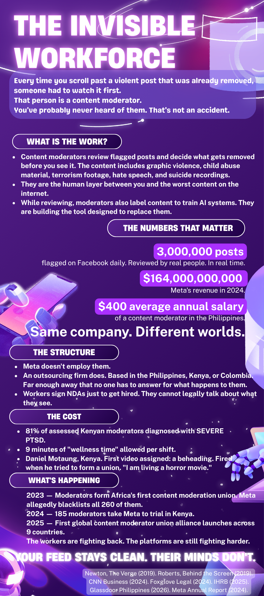

The Invisible Workforce
Every time you scroll past a violent post that was already removed, someone had to watch it first. That person is a content moderator. You've probably never heard of them. That's not an accident.
The Artifact

Full vertical infographic. Built in Canva, designed to force wage and revenue figures into the same visual frame.
Your Take
This is the same argument, one layer deeper
In my last project, I built an AI interviewer that processed everything you said and reflected it back in decimal points and percentile rankings. The argument was that the system acknowledges your input without ever actually receiving you. This project is the same argument, one layer deeper.
Why an infographic
I chose the infographic format because the subject matter is already doing a kind of violence through abstraction. Content moderation gets discussed as a platform policy issue, a regulatory question, a scale problem. Keeping it abstract is how the industry prefers it. An infographic forces the numbers into the same frame. It makes you look at "$164 billion in annual revenue" and "$350 to $480 per year salary" at the same time, in the same visual space, and it does not let you look away from one while reading the other.
The audience
My audience is people who use social media every day and have never thought about this once. Not because they are careless but because the system was designed so they wouldn't have to. The distance between a Facebook user in Columbus and a moderator in Manila is not accidental. It is a product decision.
What I want them to feel
I want them to feel what I felt reading Daniel Motaung's account: that the first video he was ever assigned to moderate was a beheading. The game I made last time had a line that said the player was not just being evaluated, they were being used. Content moderators are being used in the same way. They are told the work is meaningful and then reminded, structurally, that they are replaceable. Neither ending is a win. This infographic is the room they were never designed to leave.
The double labor
What surprised me in the research was the double labor. Moderators review content and simultaneously label it to train the AI systems being built to replace them. They are doing two jobs. One of those jobs is building the tool that eliminates the other. I kept thinking about the AI interviewer in my last project, the one that told the player their hesitations would train the next version of the system. I didn't realize I was writing about the same thing twice.
Attribution & AI Use
- Tools used
- Canva (infographic design) · Claude AI by Anthropic (research synthesis and writing assistance) · Google Scholar (source verification)
- AI prompts
- Asked Claude to help synthesize and cross-reference data points across multiple sources, identify the most comparable wage and revenue figures, and suggest visual framing for the wage/revenue juxtaposition.
- What AI generated
- Structural suggestions for the infographic layout; a draft comparison of wage-to-revenue ratios that I then verified against primary sources independently.
- What I changed or decided
- All final copy is my own writing. I verified every statistic cited against the original source. The design, visual hierarchy, opening hook ("Every time you scroll past..."), and editorial framing are my own decisions. The decision to keep the design dark and the headline cold rather than emotionally loud is mine.
- Works cited (MLA)
-
Newton, Casey. "The Trauma Floor: The Secret Lives of Facebook Moderators in America." The Verge, 25 Feb. 2019.
Newton, Casey. "The Terror Queue." The Verge, 16 Dec. 2019.
Roberts, Sarah T. Behind the Screen: Content Moderation in the Shadows of Social Media. Yale University Press, 2019.
Foxglove Legal. "Big Win in Kenya! 185 Former Facebook Content Moderators to Take Their Case Against Mass Firing to Trial." Foxglove, 23 Sept. 2024.
Al Jazeera Opinion. "African Workers Are Taking on Meta and the World Should Pay Attention." Al Jazeera, 1 Apr. 2025.
CNN Business. "Facebook Inflicted 'Lifelong Trauma' on Content Moderators in Kenya." CNN, 22 Dec. 2024.
IHRB. "Content Moderation Is a New Factory Floor of Exploitation." Institute for Human Rights and Business, 27 Nov. 2025.
UNI Global Union. "Content Moderators Launch First-Ever Global Alliance." 30 Apr. 2025.
Glassdoor. "Content Moderator Salaries in Philippines." Feb. 2026.
MacroTrends. "Meta Platforms Revenue 2012 to 2025."
MediaNama. "Meta Q4 2024 Profit Up 49%." 30 Jan. 2025. - Image credits
- All images and graphics are sourced from Canva's royalty-free library or built as original graphics within Canva. No copyrighted third-party images are reproduced.
Weekly reflection · Week 09
How does AI reshape global geographies of power, labor, and environment?
AI reshapes global geographies of power, labor, and environment by separating where decisions are made from where the work and environmental costs occur. Major AI companies such as Google and Meta are headquartered in Silicon Valley, concentrating technological and economic power in a small number of places.
At the same time, much of the labor that supports AI, including content moderation and data labeling, is outsourced to workers in countries like the Philippines, Kenya, and India. AI infrastructure also requires large data centers that consume significant amounts of land, energy, and water, often located where resources are cheaper. As a result, the benefits of AI are concentrated in a few tech hubs while many of the labor and environmental impacts are distributed across other parts of the world.
Next make →
10 — The Interview